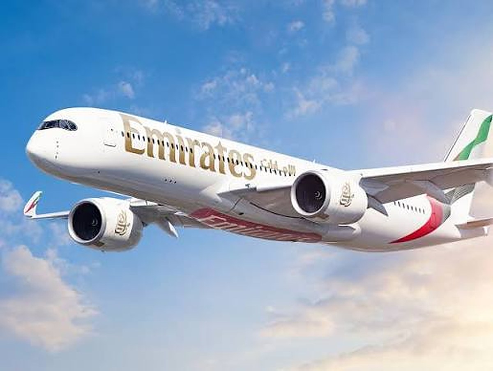

Handout: Emirates - editorial use
The Gulf added a third daily flight to Nairobi while its own hub was losing a third of its passengers. That is not confidence, it is surplus.
Dubai International carried 31% fewer passengers in the first half of 2026 and Middle East arrivals fell 22%, yet Emirates put a third daily service into Nairobi on 1 July and signed a marketing agreement with the Kenya Tourism Board in September. Kenya is measuring the deal by Middle Eastern visitors, a market worth 20,480 arrivals. The thing it has actually bought is a transfer desk, and the price is good because the aircraft has nowhere better to be.
EK717 came in over Embakasi at twenty past five on the morning of 1 July, an hour when Jomo Kenyatta International Airport is already busy with the European red-eyes. The Boeing 777 was the third Emirates arrival of the day from Dubai, a frequency the route had never carried before. Teresia Mbaika, Kenya's Principal Secretary for Aviation and Aerospace Development, called it "a strong vote of confidence in Kenya's aviation, tourism and trade sectors". Christophe Leloup, Emirates' country manager for Kenya, noted that "for three decades, Kenya has been one of Emirates' most important destinations in Africa". The route went to 21 weekly flights, and the carrier added 280 tonnes of weekly cargo capacity on top.
Both statements are true. Neither explains the timing. On the morning that third daily landed, the hub it had flown from was four months into the worst disruption in its history. The US and Israeli war on Iran began on 28 February. Within days, Qatar, Saudi Arabia, the UAE, Kuwait, Bahrain, Oman and Jordan had closed their airspace partially or completely, and Iranian projectiles had struck or been intercepted over the airports at Dubai, Abu Dhabi, Kuwait and Bahrain. Emirates resumed a handful of departures on 3 March, Etihad on 6 March, Qatar Airways the week after. Restoring the schedules took months. Dubai International handled 31% fewer passengers in the first half of 2026 than in the same period of 2025.
That is the context in which an airline chose to add capacity to Nairobi. It is worth being precise about what such a decision means. By mid-June, according to Flightradar24 tracking, Gulf carriers were operating at roughly 90% of their normal flight volumes. Emirates had restored about 96% of its destinations but was still flying only around three-quarters of its pre-war weekly frequencies. Etihad was discounting aggressively to rebuild connecting traffic. The aircraft had come back before the passengers did, which is the classic signature of a hub carrier with widebodies on the ground and a network planning department looking for somewhere to put them.
East Africa was somewhere to put them. So, in September, was a marketing agreement. The Kenya Tourism Board signed memoranda of understanding with both Emirates and Qatar Airways in Dubai in mid-September, with Julius Bitok, the Principal Secretary for Tourism, framing the logic plainly: "These agreements give us a stronger platform to convert connectivity into arrivals." Emirates will provide tickets for joint trade and media familiarisation trips; KTB covers accommodation and ground handling in Kenya. An Emirates representative offered the standard formulation that "connectivity provides the pathway, but destination marketing creates the demand".
The target attached to all this is where the thinking goes wrong. June Chepkemei, KTB's chief executive, has said Kenya is seeking to lift arrivals from the Middle East to 50,000 visitors, "compared to 20,480 recorded during the 2026 financial year", a number the board values at roughly Sh15 billion on an indicative Sh300,000 per visitor. Trebling a source market sounds like ambition. Set against the 2.79 million arrivals the government's own delivery unit reported by June, and the Sh564 billion in earnings it attributes to the sector, 20,480 is fewer than one arrival in a hundred. Even the 50,000 target, fully achieved, would move Kenya's arrivals mix by less than a percentage point.
The Gulf carriers are not, in any serious sense, selling Kenya the Gulf traveller. They are selling Kenya a transfer desk. Emirates connects Nairobi to more than 138 destinations through Dubai; Qatar Airways offers the same proposition through Doha. The commercial value of those three daily 777s to a camp in the Mara or a beach hotel in Diani is the German, the Italian, the Indian and the American who changes planes in the Gulf and never books a night there. Measuring the relationship by Emirati and Saudi arrivals is like measuring a wholesaler by the staff who work in its warehouse.
This matters because the two things move in opposite directions. Gulf-origin leisure demand is weak and will recover with the region's security picture. Gulf-transfer capacity to East Africa is abundant precisely because that demand is weak. Kenya has signed a co-marketing deal at the moment of maximum airline generosity, which is also the moment of maximum reversibility. When Dubai and Doha fill their own beds again and the long-haul connecting flows normalise, the spare widebody acquires better options and the familiarisation budget follows it. There is nothing cynical in that; it is how network planning works. The error would be to treat a window as a structure.
The window may already be narrowing. UN Tourism's barometer, published on 17 September, put global international arrivals up just 0.4% in the first half of 2026, around 690 million travellers, and cut the full-year forecast from 3% to 4% growth down to 1% to 2%. Within that, the Middle East fell 22%, the steepest regional decline anywhere, while Africa grew 4% and was the fastest-growing region in the world. Shaikha Al Nuwais, the organisation's secretary-general, described "a sector absorbing real pressure and finding a way forward", adding that "tourism has not stopped growing, but that growth is fragile". The Middle East situation, she said, "has touched destinations far beyond the region itself".
It has touched them on the cost side too, and that bill lands on East African operators whether or not they ever see a Gulf transfer. The International Air Transport Association, presenting its revised outlook at its Rio de Janeiro annual meeting on 7 June, halved the industry's expected 2026 net profit to $23 billion from $45 billion in 2025, a net margin of 2.0%, on a jet fuel assumption of $152 a barrel against $90 the year before, a rise of 69%. Middle Eastern carriers were put on course for a collective loss, estimated at $4.3 billion. A fuel shock of that size does not stay inside an airline's accounts. It arrives in a lodge's rate negotiation as a long-haul fare that has to be absorbed somewhere in the package, usually by shortening the stay or trading down the room.
Which brings the argument to Zanzibar, and to the most misread number in East African hospitality this year. The Office of the Chief Government Statistician's release of 8 September recorded 124,481 international arrivals in August, up 18% on August 2025 and 15.5% on July, taking the January to August total to 633,228, a rise of 10.6%. Estimated bed occupancy stood at 92.9%, derived from 949,056 visitor nights against 1,021,853 available bed spaces. The average intended stay was 7.6 nights. It is a genuinely excellent set of figures, and it has very little to do with the Gulf. Europe supplied 58.1% of August's arrivals, with Italy alone at 14.1%, the United Kingdom at 7.9%, Germany at 6.9% and France at 6.8%. Africa supplied 24.5%, Kenya alone 6.4%.
So the two pieces of good news in East African tourism in 2026 have different parents. Zanzibar's is European, long-stay and largely charter-fed. Nairobi's new capacity is Gulf-routed, short-notice and hub-dependent. Conflating them is how a rate card gets set wrong, because the obvious inference from a 92.9% August is that 2027 can be contracted harder, and the obvious inference from three daily Emirates services is that volume is secured. Neither inference is safe. One is a European market that has held up while the Gulf has not, and the other is surplus metal that will be reallocated the moment its home market recovers.
Nor is this a simple displacement story in which the Gulf's loss is East Africa's gain. Egypt, the continent's largest tourism economy and the obvious beneficiary of a Gulf beach market in trouble, recorded 6.1 million visitors in the first four months of 2026 with the Red Sea leading its growth. Africa's 4% was broad rather than concentrated. What East Africa received was not a transfer of visitors from the Gulf but a transfer of aircraft, and those are very different assets to have been given.
The operators closest to the coastline are the ones least impressed by the connectivity story, and they are right to be. Sam Ikwaye, the Kenya Association of Hotelkeepers and Caterers' executive officer for the coast, has put the structural problem bluntly: the absence of direct international service into the coastal airports is "what is still blocking the growth that we should be seeing". A third daily into Nairobi does not put a body in a Mombasa bed. It puts a body at a domestic transfer gate, where Kenya's own connecting economics take over and a meaningful share of the arrival is lost to Nairobi hotels, safari circuits and schedule gaps. Hillary Siele, who manages the Travellers Beach Hotel and Spa in Mombasa, was asked about forward bookings and answered about something else entirely: "Our worry is just the election period." Mohammed Hersi of Pollman's Tours and Safaris made the same point in three words. "Stability is key."
That is the right instinct, applied to the wrong hemisphere. East African operators have spent 2026 watching their own calendar, with Kenya's general election due next August, while the variable that actually set their inbound fares and their long-haul seat supply this year was decided in the Strait of Hormuz. The practical response is not to turn down Emirates tickets. It is to use them for what they are worth now, trade and media familiarisation, while they are free, and to stop reporting the relationship in Middle Eastern arrivals, which measures a market Kenya was never going to win in volume. Count routings instead of nationalities, and the Gulf partnership looks like what it is: a temporary, generous, entirely conditional lease on somebody else's spare capacity. Price the 2027 rate year off that, and the war is in the contract whether anyone named it or not.
📣 Telegram 💬 WhatsApp 💼 LinkedIn 📚 All guides